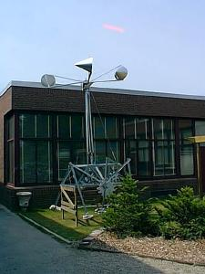
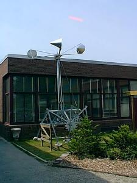 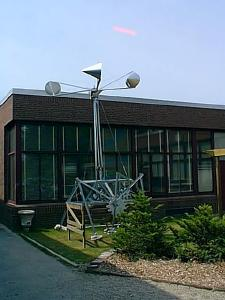
The RetroBot is a wind-powered walking machine constructed from recycled materials. She was created in the spring of 2003 as an outdoor art instalation.
Dimensions: 15 feet tall x 6 feet long x 5 feet wide
Power: 8 foot diameter anemometer connected to 128:1 gear reduction
Retrobot Maximum Velocity (15mph wind): 20 yards/ fortnight
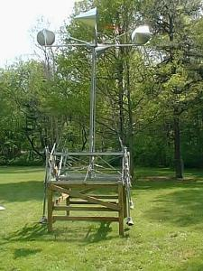 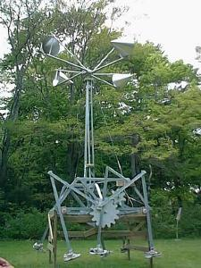 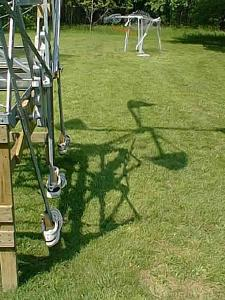
The RetroBot as installed in an outdoor exhibition.
(The wooden support structure was added to address museum curator fears of walking machine related tramplings.)
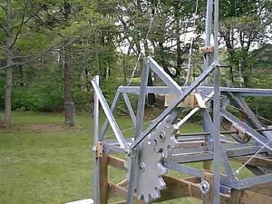 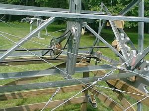
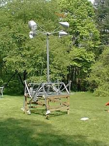 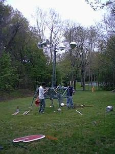
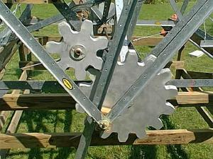 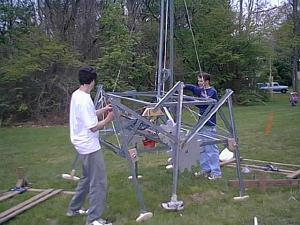
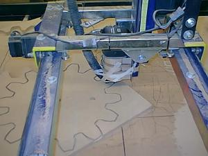 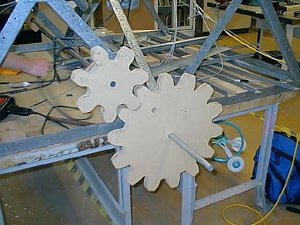
The RetroBot's unprotected MDF gears survived 2 years of Massachusetts weather
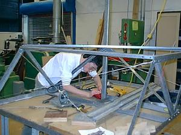
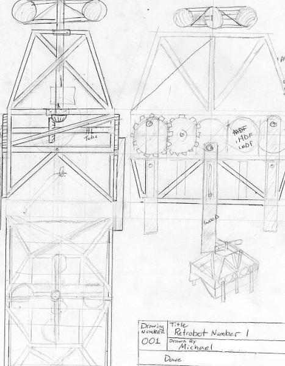 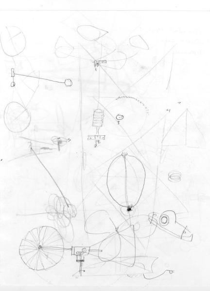
Initial RetroBot concept sketches
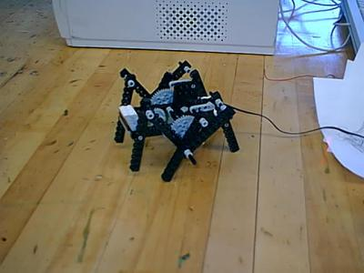 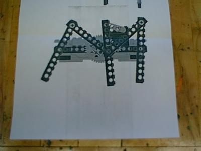
Lego Prototype of Retrobot walking mechanism